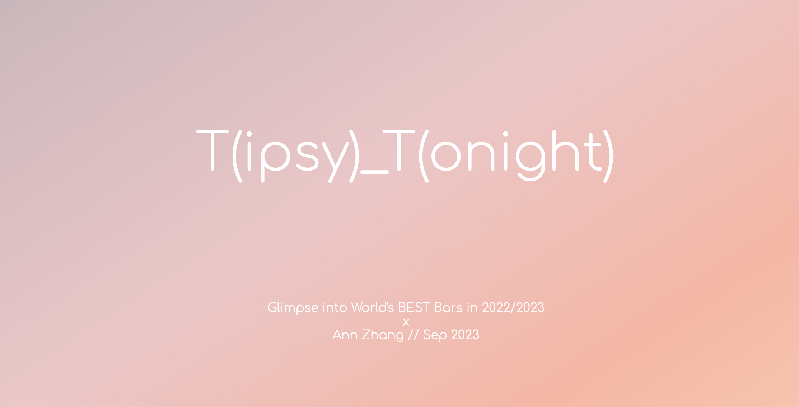
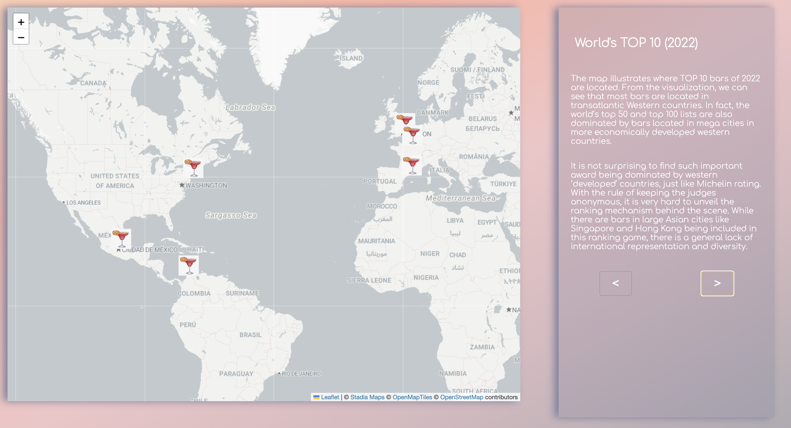
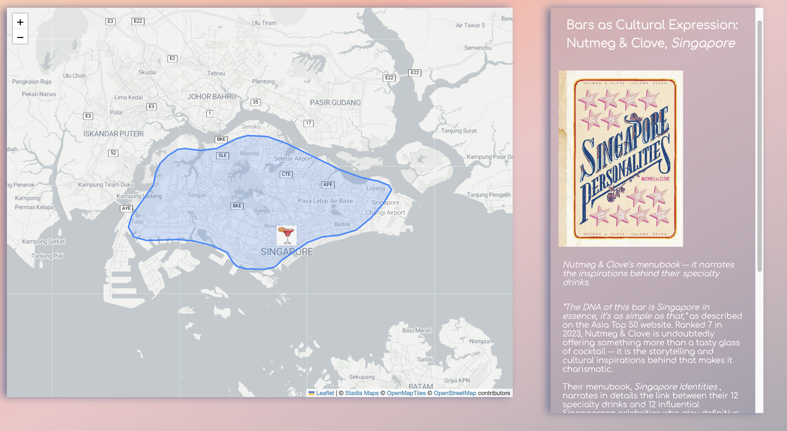

Tipsy_Tonight (T_T): Storymap about World's Best Bars

This storymap is born out of my personal interest and passion for drinking and my curiosity in how the bars are judged / marketed around the world. Coming from Asia, I am witnessing the raise of bars in Asia, not only interms of quantity but also quality. Award-wining local bartenders and owners start to integrate the essence of local culture into the drinks, the interior design, and the whole bar experience. On a city level, many metropolitan cities are home to highly-ranked beloved bars, which turns to be their soft power and attraction to younger generations.
Demo 1: Interactive Plot Tracking Best Bars Locations in the World and Asia Over Years
(It's interactive! Try clicking one or holding shift and clicking more to see the trend. )
Echoing the City's soft power point, I tracked how many Top 50 bars each city is home to from 2017 to 2022 (2023). As you will find when interacting with the graph, cities like London has been home to many top-rated bars over years. Regionally in Asia, Singapore and Hong Kong are undoubtedly the champions in hosting unique and high-quality-bars. During my research, on the other hand, I found Chinese cities like Beijing and Shanghai have been seeing a downfall over the COVID years, potentailly due to the lockdowns. It will be interesting to see whether they will rebound from now.
Demo 2: Storymap Slide Deck Interface
The storymap's slidedecks aim to capture both the general trends around the world (e.g., World's TOP 50 bars are largely located in North America and Europe , showing potential biases of the criteria and ranking systems) and callouts on specific cities or bars that are unique in some ways (e.g., Hong Kong's Lan Kwai Fong and bar industry is very representative.)
Demo 3: Bar Highlight
This is an example of a callout slide for a bar in Singapore. Nutmeg & Clove has been receiving high ranks over years. It is one of the best examples of how bars become windows to introduce local history and culture. Their menu is inspired by some of the most influential Singaporeans, and the drinks and food incorporate local ingrediants and recipes. And we are seeing more and more bars in Asia and other places in the World making similar moves towards shaping bars into a cultural entity.